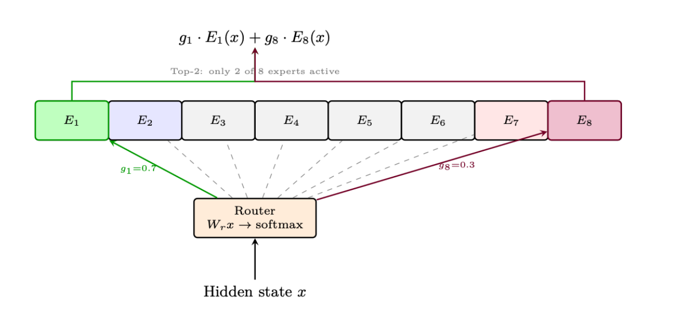

1.10 Mixture of Experts (MoE)
A panel of specialists, with a
router
that picks a few

A router sends each token to the top 2 of 8 experts
Source: Roitman, Hitchhiker's Guide to Agentic AI, Fig. 1.11, p.79
What to notice
1
A small router looks at each word and picks just two experts to handle it; the other six stay idle.
2
So the model can hold a lot of knowledge across many experts, while the work per word stays small.
In plain terms
Expert
One of several sub-networks; different ones specialise in different inputs.
Router
The chooser that sends each word to its best-matching experts.